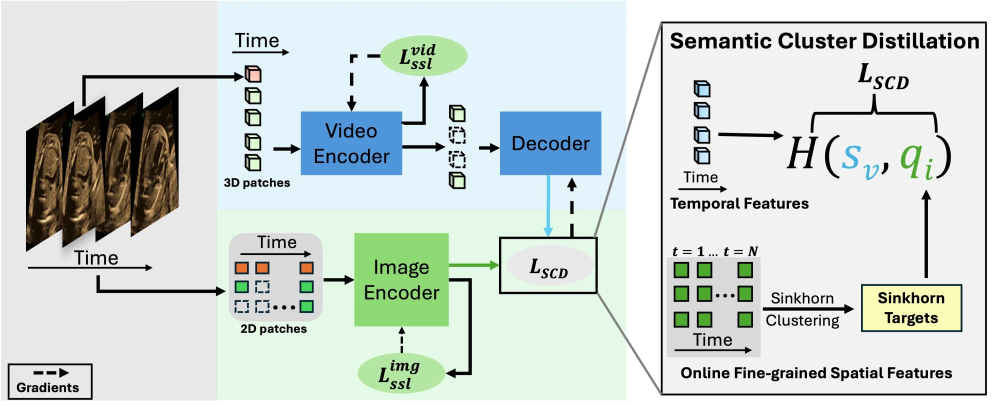
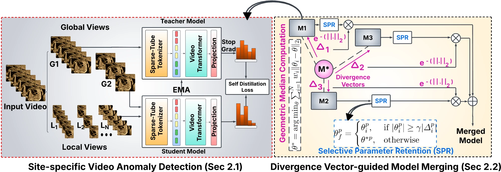
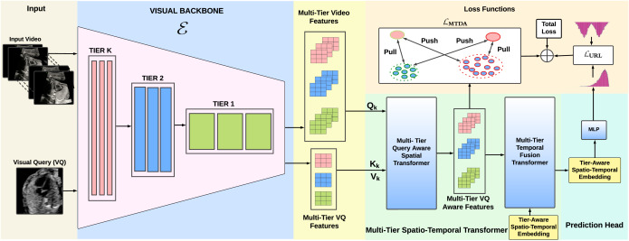
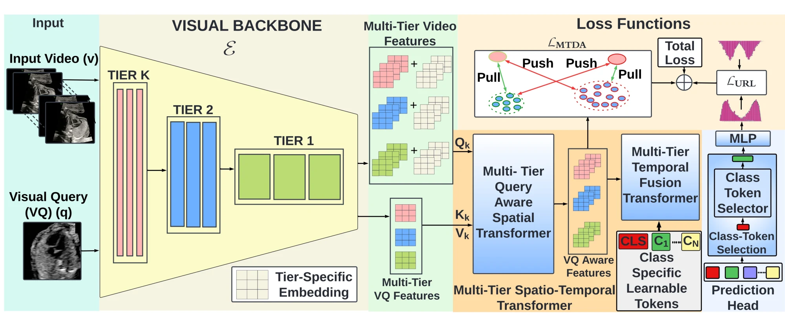
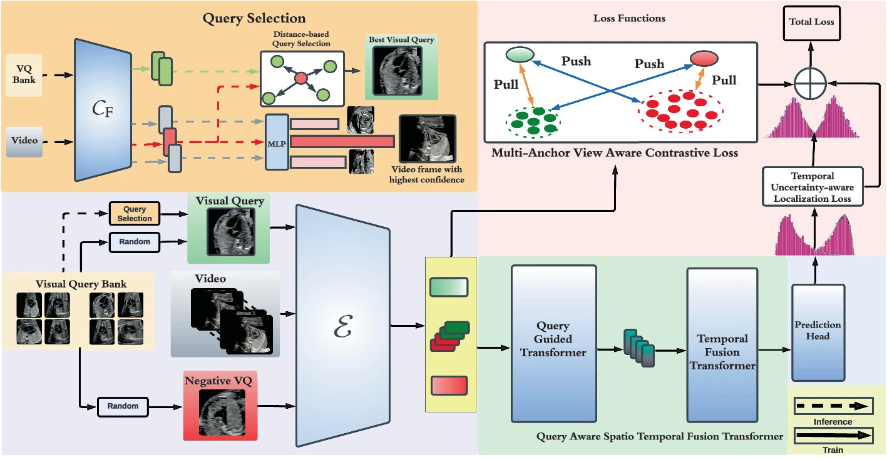
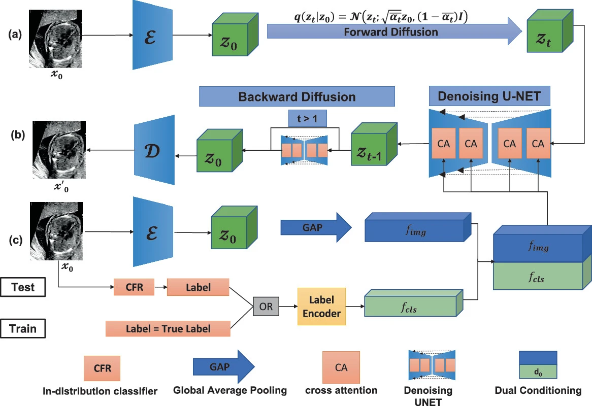

LLM and agentic post-training
Supervised fine-tuning for reasoning, planning, tool use, and confidence calibration in reliable, computationally efficient models.
Senior Research Scientist Amazon Science
Visiting Researcher University of Oxford
I am a Senior Research Scientist at Amazon, where I work on post-training LLMs and agentic systems. My research focuses on reasoning, planning, and tool use in LLMs and agents, with an emphasis on improving accuracy, confidence calibration, and robustness. I aim to develop reliable, computationally efficient systems that can handle complex, multi-step tasks at Amazon’s scale.
I am also a Visiting Researcher at the University of Oxford, where I work on multimodal post-training, video representation learning, and world models. My research interests include developing efficient, temporally aware video representations that capture long-range temporal context, as well as learning and aligning representations across modalities with minimal reliance on paired data.
I completed my DPhil in Computer Vision and Machine Learning at the University of Oxford, supervised by Professor Alison Noble and supported by the Athena-Bronze Scholarship. My doctoral research focused on learning from long-form videos, particularly fetal ultrasound, to support the identification of congenital heart disease. This work spanned temporal localization, self-supervised learning, and multimodal representation learning.
Before joining Amazon full-time, I interned at Amazon Science as an Applied Scientist II, where I investigated whether Video-LLMs could learn temporal reasoning entirely from text and transfer these capabilities to video at inference time. This work explored the modality gap between text and visual representations, and how cross-modal alignment can enable transfer without relying on paired video-text data for training.
Prior to Oxford, I worked as a Data Scientist at the Translational Health Science and Technology Institute (THSTI), Government of India, with Professor Shinjini Bhatnagar. In collaboration with clinicians and public health researchers, I developed machine learning methods for preterm birth prediction, gestational-age estimation, and privacy-preserving ultrasound analysis, some of which are now undergoing clinical validation and translation.
I welcome discussions on research, new ideas, and potential collaborations.
Research
Supervised fine-tuning for reasoning, planning, tool use, and confidence calibration in reliable, computationally efficient models.
Learning and aligning representations across modalities with minimal reliance on paired data.
Efficient, temporally aware video representations that capture long-range temporal context.
Experience
Seven years spanning applied research in industry and doctoral work at Oxford.
Amazon Science · Seattle
University of Oxford
University of Oxford · Noble Lab
Amazon Science · Berlin
THSTI · Government of India
Selected work
A selection of my work on model adaptation, video understanding, and medical imaging.

ORena SAVE FOCUS 2026 · Solo project
Surgical data preparation, multimodal LoRA fine-tuning, and coarse-to-fine temporal search. Explore both released models, the inference code, and local design studies.

NeurIPS 2025
Self-supervised video representations through online cluster distillation.

MICCAI 2025
Zero-shot anomaly detection with privacy-preserving model merging.

Medical Image Analysis 2025
Visual query-based localization in long fetal ultrasound video.

AAAI 2025
Class-aware token transformers for anatomical clip localization.
What’s new
Invited to give highlight talks on my solo submission at the ORena SAVE FOCUS session at MICCAI 2026. The methods, models, and code are now available.
ExploreNew preprint on externally validated deep learning models for spontaneous preterm birth prediction.
ReadNew preprint on selecting task-specialized models as tools for agentic healthcare systems.
ReadJoined Amazon Science after completing my DPhil at Oxford.
Research output
medRxiv 2026
Radhika Chanian*, Divyanshu Mishra*, Rahul Jain, Nikhil Sharma, Ashok Khurana, Reva Tripathi, Abhinav Jain, GARBH-Ini study group, Nitya Wadhwa, J. Alison Noble, Ramachandran Thiruvengadam, Bapu Koundinya Desiraju, and Shinjini Bhatnagar
Manuscript under review
Divyanshu Mishra, S. Sternig, R. Shetty, and Erhan Gundogdu
MICCAI 2025 · Co-first author
Pramit Saha*, Divyanshu Mishra*, Netzahualcoyotl Hernandez-Cruz, Olga Patey, Aris T. Papageorghiou, Yuki M. Asano, and J. Alison Noble
Medical Image Analysis 2025
Divyanshu Mishra, Pramit Saha, He Zhao, Netzahualcoyotl Hernandez-Cruz, Olga Patey, Aris T. Papageorghiou, and J. Alison Noble
Medical Image Analysis 2025 · Co-first author
Md Mostafa Kamal Sarker*, Divyanshu Mishra*, Mohammad Alsharid*, Netzahualcoyotl Hernandez-Cruz, Rahul Ahuja, Olga Patey, Aris T. Papageorghiou, and J. Alison Noble
AAAI 2025
Divyanshu Mishra, Pramit Saha, He Zhao, Netzahualcoyotl Hernandez-Cruz, Olga Patey, Aris Papageorghiou, and J. Alison Noble
medRxiv 2024
Divyanshu Mishra, Varun Chandramohan, Nikhil Sharma, Mudita Gosain, Nitya Wadhwa, Uma Chandra Mouli Natchu, GARBH-Ini study group, Ashok Khurana, J. Alison Noble, Ramachandran Thiruvengadam, Bapu Koundinya Desiraju, and Shinjini Bhatnagar

MICCAI 2024
Divyanshu Mishra, Pramit Saha, He Zhao, Olga Patey, Aris T. Papageorghiou, and J. Alison Noble

MICCAI 2023
Divyanshu Mishra, He Zhao, Pramit Saha, Aris T. Papageorghiou, and J. Alison Noble